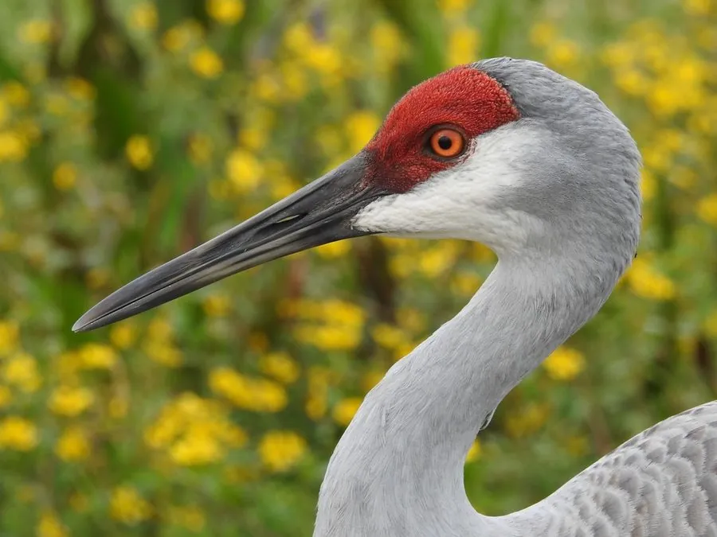

鸟类 · 动物界
沙丘鹤 Antigone canadensis

北美洲最常见的鹤类，通体灰褐、前额鲜红，迁徙时数万只聚集在河谷，是美国著名的自然景观之一。
- 分类
- 门脊索动物门纲鸟纲目鹤形目科鹤科属赤颈鹤属
- 栖息环境
- 草原湿地、沼泽、湖泊浅滩和农田，迁徙时集中于宽阔的河谷
- 地理分布
- 繁殖于北美大陆和西伯利亚东北部，越冬于美国南部与墨西哥北部，中国偶见迷鸟
- 保护级别
- IUCN 无危（LC）；在中国为偶见迷鸟，未列入国家重点保护名录
物种志
沙丘鹤体长 80–120 cm，体重 2.5–6.5 kg，翼展 160–210 cm。全身羽毛呈灰褐色，背部和翅膀颜色较深，胸腹部较浅，前额有一块鲜红色的裸皮，头顶和颈部呈灰白色，腿黑色。它的喙长而直，适合在浅水和泥地中探取食物。
沙丘鹤在北美大陆和西伯利亚东北部繁殖，越冬于美国南部和墨西哥北部，中国偶有迷鸟记录。它们栖息在草原湿地、沼泽和农田，吃谷物、植物根茎、昆虫、蛙类和小型哺乳动物。每年春秋迁徙时，数十万只沙丘鹤会聚集在美国内布拉斯加州的普拉特河，形成壮观的景象。繁殖期每窝产卵 2 枚，孵化 29–32 天，雏鸟出壳后很快就能离巢行走。沙丘鹤种群数量较大，被列为无危物种。
形态与习性
- 食性谷物、植物根茎、昆虫、蛙类和小型哺乳动物
- 体长80–120 cm
- 体重2.5–6.5 kg
- 翼展160–210 cm
- 繁殖每窝 2 枚卵，孵化 29–32 天
- 寿命野外约 20–25 年
- 迁徙春季数万只聚集于美国内布拉斯加州普拉特河
趣味知识
- 每年春季约 50 万只沙丘鹤聚集在美国内布拉斯加州的普拉特河，是世界上最大的鹤类聚集。
- 沙丘鹤的求偶舞包括跳跃、展翅、鞠躬和抛掷草茎。
- 沙丘鹤的化石记录可追溯到数百万年前，是相当古老的鸟类。
- 它们会吞下小石子储存在砂囊中，帮助磨碎食物。